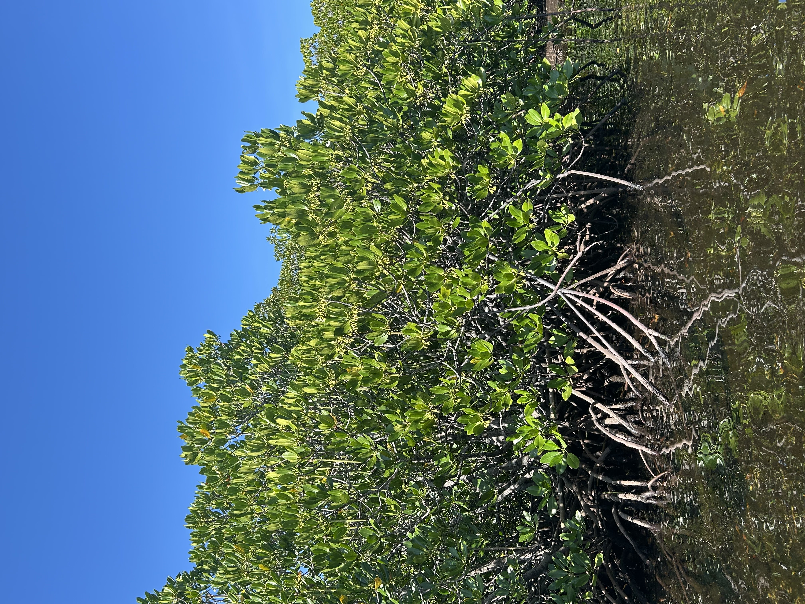

A field guide to palynology
Mangrove
Pollen Guide
A closer look at coastal life. Explore mangrove species and the microscopic features that tell them apart.
Ebuenga & Imperial · BS Biology · A.Y. 2026–2027

01 / The collection
Meet the mangroves
Explore whole-plant, flower, and pollen characteristics.
Select a species to take a closer look.
02 / The identification tool
One observation.
Two possibilities.
Follow the dichotomous key to identify your pollen sample. At each step, choose the statement that best describes what you observe.
Look closely at the aperture, shape, surface pattern, and size of your pollen grain.
The science behind the guide
Small grains.
A wider perspective.
Palynology is the study of spores and plant pollen grains. It provides information relevant to airborne allergies, ecosystem changes due to global warming, and bee forage.
This guide examines the pollen morphology of mangrove species to identify and characterize their pollen features.